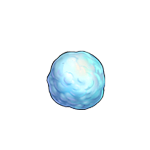

Получено: файл; исходный URL. Оригинальные байты с указанного зеркала; идентичность архивному файлу не проверена.
Снежок
Мой Мир; историческая таблица, дата редакции не установлена- Тип
- нет данных
- Покупка
- 1 Зб; место покупки не указано
- Продажа
- 500 монет
- Как получить
- До следующей зимы снежков не будет Где достать: Бесплатный подарок от друзей
- Применение
- Участвует в строительстве: Снеговик
- Особенности
- нет данных
- Версия и дата
- Мой Мир; историческая таблица, дата редакции не установлена


Данные по источнику · Мой Мир · 20.06.2011
Предварительно: один источник; требует сверки. Требуется сверка.
- Покупка
- 1 зомбаксов (по источнику)
- Продажа
- 500 монет
- Получение
- Бесплатный подарок
- Применение
- Снеговик
Данные по источнику · ВКонтакте, ZOMBIA · 27 Июня 2011, 12:16; дата редакции не установлена
Предварительно: Данные одной исторической фанатской страницы; цифры и подписи изображений требуют сверки. Описание и условия сохранены по колонкам без додумывания.. Требуется сверка.
- Описание материала
- Снежок 500 монет 1 Зомбакс (временно недоступен)
- Участвует в строительстве
- нет текстовых данных; возможны неподписанные изображения
- Как достать
- Бесплатный подарок. Выиграть в рулетке Выиграть в рулетке Выиграть в рулетке Выиграть в рулетке
- Нужен в создании
- В Бассейне
Данные по источнику · браузерная версия; платформа не указана · дата редакции неизвестна
Предварительно: Подписи и последовательность пиктограмм перенесены без автоматического толкования. Названия, цены и направления стрелок требуют визуальной сверки; возможны ошибки самого сайта.. Требуется сверка.
- Колонка 1 в порядке пиктограмм
- [подпись: Снежок; файл snegok.png] [подпись: Стоимость (Зомбаксов); файл zombucks.png] 1 [подпись: Продажа; файл moneta.png] 500
- Колонка 2 в порядке пиктограмм
- [значок: proizvoditsya.png]
- Колонка 3 в порядке пиктограмм
- [значок: stroit.png] [подпись: Снеговик; файл snegovik.png] [подпись: Бассейн; файл basseyn.png]
- Колонка 4 в порядке пиктограмм
- [значок: sosdanie.png] [подпись: Вода; файл voda.png] [значок: strelka.png] [подпись: Бассейн; файл basseyn.png]
- Колонка 5 в порядке пиктограмм
- [значок: bonus.png] [подпись: Флаг БАТЭ; файл flag_bate.png] [подпись: Флаг Зенита; файл flag_zenit.png] [подпись: Флаг Спартака; файл flag_spartak.png] [подпись: Флаг ЦСКА; файл flag_cska.png]
Данные по источнику · браузерная Зомби Ферма / Зомби Мания; платформа требует проверки · дата URL не гарантирует дату редакции
Предварительно: Индивидуальная страница прочитана автоматически, подписи значков могут содержать ошибки; даты редакции и независимость от ЗомбиСити не установлены.. Требуется сверка.
- Основной блок страницы и подписи изображений
- Материал [иллюстрация: Снежок] Снежок Цена покупки: 1 [иллюстрация: Зомбаксы] Цена продажи: 500 [иллюстрация: Монеты] Продать или купить Снежок за ресурсы игры можно в разделе Обменка Зомби Фермы Материал Снежок иногда становится доступным для рассылки друзьям бесплатно. Обычно в Зомби Ферме это происходит зимой. Кроме того его можно добывать и находить в чемоданах, получать в ответ на подарки в елки. Снежок можно получить в ответ, положив другу под Ёлку Пряник: Пряник [иллюстрация: Пряник] [иллюстрация: Стрелка] Маленькая ёлочка [иллюстрация: Маленькая ёлочка] Большая ёлка [иллюстрация: Большая ёлка] Огромная ёлка [иллюстрация: Огромная ёлка] Снежок можно добыть камнетёсами или Палочками в Снежных глыбах: Камнетес [иллюстрация: Камнетес] [иллюстрация: Стрелка] Снежный пик маленьк [иллюстрация: Снежный пик маленький] Снежный пик средний [иллюстрация: Снежный пик средний] Снежный пик большой [иллюстрация: Снежный пик большой] [иллюстрация: Стрелка] Палочка-выручалочка [иллюстрация: Палочка-выручалочка] На Снежки можно разобрать Горящие шары на своих островах: Горящий шар [иллюстрация: Горящий шар маленький] Горящий шар [иллюстрация: Горящий шар средний] Горящий шар [иллюстрация: Горящий шар большой] При копании Лопатами, иногда можно выкопать Снежок: Праздничная ель [иллюстрация: Праздничная ель] Синий клеверок [иллюстрация: Синий клеверок] Синий [иллюстрация: Синий] Изумрудная арка [иллюстрация: Изумрудная арка] Изумрудная арка [иллюстрация: Изумрудная арка] Изумрудный забор [иллюстрация: Изумрудный забор] Изумрудный забор [иллюстрация: Изумрудный забор] Груда тыкв [иллюстрация: Груда тыкв] Снежок попадается в ценностях: Чемодан [иллюстрация: Чемодан туриста] Дизайнерской [иллюстрация: Дизайнерской] Строгое [иллюстрация: Строгое] Полярный носок [иллюстрация: Полярный носок] Снежок участвует в производстве материалов: 5 Капля воды [иллюстрация: Капля воды] = 5 Снежок [иллюстрация: Снежок] + 1 Огонь [иллюстрация: Огонь] [иллюстрация: Стрелка] Альпийский дом [иллюстрация: Альпийский дом] Вода [иллюстрация: Вода] = 1 Снежок [иллюстрация: Снежок] + 1 Огонь [иллюстрация: Огонь] [иллюстрация: Стрелка] Бассейн [иллюстрация: Бассейн] Снежная А [иллюстрация: Снежная А] = 20 Снежок [иллюстрация: Снежок] + 5 Время [иллюстрация: Время] [иллюстрация: Стрелка] Школа [иллюстрация: Школа] Снежный паровоз [иллюстрация: Снежный паровоз] = 20 Снежок [иллюстрация: Снежок] + 80 Пряник [иллюстрация: Пряник] [иллюстрация: Стрелка] Лувр [иллюстрация: Лувр] Снежок [иллюстрация: Снежок] = 1 Снежок [иллюстрация: Снежок] + 5 Пряник [иллюстрация: Пряник] [иллюстрация: Стрелка] Лувр [иллюстрация: Лувр] Снежок [иллюстрация: Снежок] = 3 Снежок [иллюстрация: Снежок] + 10 Пряник [иллюстрация: Пряник] [иллюстрация: Стрелка] Лувр [иллюстрация: Лувр] Лыжник [иллюстрация: Лыжник] = 10 Снежок [иллюстрация: Снежок] + 50 Пряник [иллюстрация: Пряник] [иллюстрация: Стрелка] Лувр [иллюстрация: Лувр] Снежок участвует в строительстве: Праздничная ель [иллюстрация: Праздничная ель] Снеговик [иллюстрация: Снеговик] Бассейн [иллюстрация: Бассейн] Колизей [иллюстрация: Колизей] Флаг Марафонца [иллюстрация: Флаг Марафонца] Снежный доступ [иллюстрация: Снежный доступ ] Остров Чудовища [иллюстрация: Остров Чудовища] Спортивный 2 [иллюстрация: Спортивный 2] Смелый лыжник [иллюстрация: Смелый лыжник] Лыжный трамплин [иллюстрация: Лыжный трамплин] Перевал №1 [иллюстрация: Перевал №1 ] Домой [иллюстрация: Домой] Его можно выиграть в рулетках: Флаг БАТЭ [иллюстрация: Флаг БАТЭ] Флаг Зенита [иллюстрация: Флаг Зенита] Флаг ЦСКА [иллюстрация: Флаг ЦСКА] Флаг Спартака [иллюстрация: Флаг Спартака] Смелый лыжник 2 [иллюстрация: Смелый лыжник 2] Приз за выполнение заданий: Мир и дружба [иллюстрация: Мир и дружба] Домооой!! [иллюстрация: Домооой!!] Лунный [иллюстрация: Лунный] Марафон 34 [иллюстрация: Марафон 34] Ящик [иллюстрация: Ящик] Видео - Как раздобыть Снежок в Мраморной пещере Палочками-выручалочками: Видео - Как раздобыть Снежок в снежных глыбах Камнетесами и Палочками:
Текст источника без реконструкции
До следующей зимы снежков не будет Где достать: Бесплатный подарок от друзей Участвует в строительстве: Снеговик
Связанные сущности
- Ель бумажная 1 — добываемый материал
- Ель бумажная 2 — добываемый материал
- Ель бумажная 3 — добываемый материал
- Ель бумажная 4 — добываемый материал
- Ель бумажная 5 — добываемый материал
- Ель бумажная 6 — добываемый материал
- Ель бумажная 7 — добываемый материал
- Ель бумажная 8 — добываемый материал
- Ель бумажная 9 — добываемый материал
- Бумажная шишка — добываемый материал
- Бумажные шарики 1 — белые — добываемый материал
- Бумажные шарики 2 — синие — добываемый материал
- Бумажные шарики 3 — добываемый материал
- Варежка 1 — Сказочный лес — добываемый материал
- Варежка 2 — Сказочный лес — добываемый материал